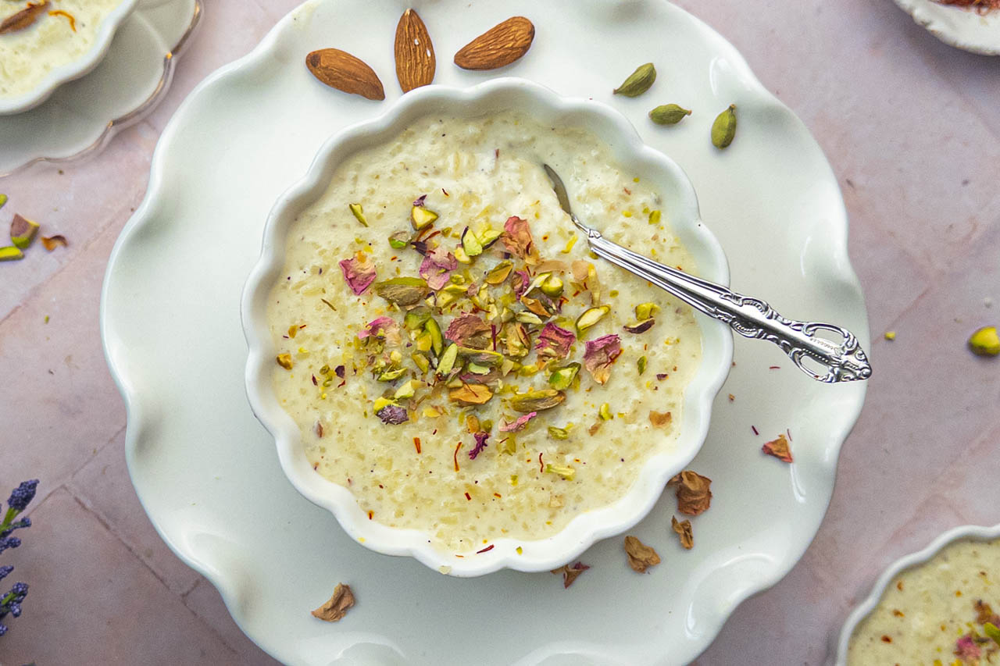

Kheer

Description:
Kheer is a popular Indian dessert that is made with milk, rice, sugar, and various flaorings such as cardamom, saffron, and nuts.
Ingredients:
- 1 liter full-fat milk
- 1/4 cup basmati rice
- 1/2 cup sugar
- 1/4 teaspoon cardamom powder
- A few strands of saffron
- 2 tablespoons chopped almonds
- 2 tablespoons chopped pistachios
- 1 tablespoon raisins
- 1 tablespoon sliced pistaschio for garnish
Setps To Make a Kheer :
- Rinse the rice and soak it in water for about 30 minutes.
- Then, In a large pot, bring the milk to a boil and add the soaked rice.
- Cook the rice in the milk on low heat, stirring occasinally, until the rice is fully cooked and has absorved most of the milk.
- Add sugar and your choice of flaorings, such as cardamom powder and saffron strands, and cook for a few more minutes.
- Garnish the kheer with chopped nuts like almonds and pistachios before serving.